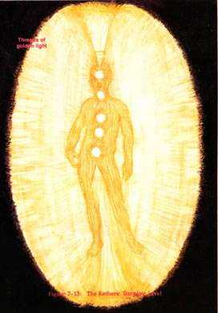

Expression of Consciousness: Higher Concepts
Statement Consciousness
makes: "I know. I am"
Consciousness is expressed in higher concepts of knowing or belief systems.
This is where the initial creative impulse begins; not just linear knowing,
but integrated knowing."
Plane of existence: Spiritual Plane
Chakra: Sahasrara (Crown)
colour: Golden
The Ketheric Template or Causal Body (Seventh Layer)
"The seventh level is the mental level of the spiritual plane called the ketheric template. It extends from about two and one half to three and one half feet (75 to 105 cm) from the body. When we bring our consciousness to the seventh level of the aura, we know that we are one with the Creator. The outer form is the egg shape of the aura body and contains all the auric bodies associated with the present incarnation an individual is undergoing. This body, too, is a highly structured template. It appears to my vision as composed of tiny threads of gold-silver light of very strong durability that hold the whole form of the aura together. It contains a golden grid structure of the physical body and all the chakras.
When "tuning" into the frequency level of the seventh layer, I perceive beautiful golden shimmering light that is pulsating so fast that I use the term "shimmering!' It looks like thousands of golden threads. The golden egg form extends out beyond the body some three to three and a half feet depending on the person with the smaller tip beneath the feet and the larger end about three feet above the head. It can expand even more, if the person is very energetic. The outer edge actually looks like an eggshell to me; it appears to have a thickness of about a quarter to a half inch (6 to 13 mm). This outer part of the seventh layer is very strong and resilient, resistant to penetration and protects the field just as an eggshell protects the chick. All the chakras and body forms appear to be made of golden light on this level. This is the strongest, most resilient level of the auric field.
It could be likened to a standing lightwave of intricate shape and form vibrating at an extremely high rate. One can almost hear a sound when looking at it. I'm sure a sound could be heard if one meditated on such a picture. The golden template level also contains the main power current that runs up and down the spine and is the main power current that nourishes the whole body. As this golden power current pulsates up and down the spine, it carries energies through the roots of each chakra and connects the energies that are taken in through each chakra.
The main vertical power current induces other currents at right angles to it to form golden streamers that extend directly outward from the body. These in turn induce other currents that circle around the field, so that the entire auric field and all the levels below it are surrounded and held within this basket-like network. This network shows the power of the golden light, the divine mind that holds the whole field together in its entirety and its integrity.
In addition, in the ketheric template level are also the past life bands within the eggshell. These are colored bands of light which completely encircle the aura and can be found anywhere on the eggshell surface. The band found near the head-neck area is usually the band containing the past life that you are working to clear in your present life circumstance. Jack Schwarz speaks of these bands and how to tell their meaning by their color. The ketheric level is the last auric level in the spiritual plane. It contains the life plan and is the last level directly related to this incarnation. Beyond this level is the cosmic plane, the plane that cannot be experienced from the limiting viewpoint of only one incarnation.
from Barbara Brennan, Hands of Light p.52-53
http://www.kheper.net/topics/subtlebody/ketherictemplate.html
My comments on the Ketheric Template Body
The name Ketheric Template is very misleading - we are hardly speaking about the sefirah Keter here! The Ketheric Template would seem to be described here as a higher octave of the mental body - a sort of Spiritual Mental body extremely close if not exactly equivalent to (and derived from?) the concept of the "Causal body" or "Auric Egg" of Theosophy. Rudolph Steiner referred to this as "Spirit Man". It is presented as the limit of the individual incarnate being, and for this reason can be represented in traditional astrological cosmology by the planet Saturn, representing the limitation that defines one as an individual being. Saturn is also the teacher, who metes out karma. In this way, the individual personality is forced to grow spiritually.
As the higher mental or spiritual body, this would also be the body for the physical expression of higher spiritual inspiration or gnosis. It represents the incarnation of the Ruah or Spirit in the physical plane. This consciousness is poorly developed in most people, but awakened in the spiritually and higher occultly aware.
The following table presents some tentative associations and correspondences with the Ketheric template body.
or "David of your being"?